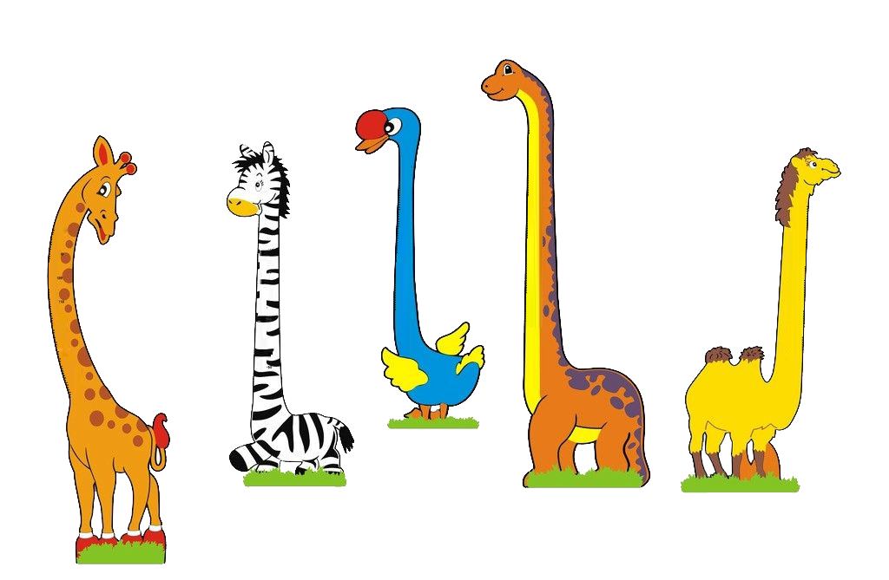
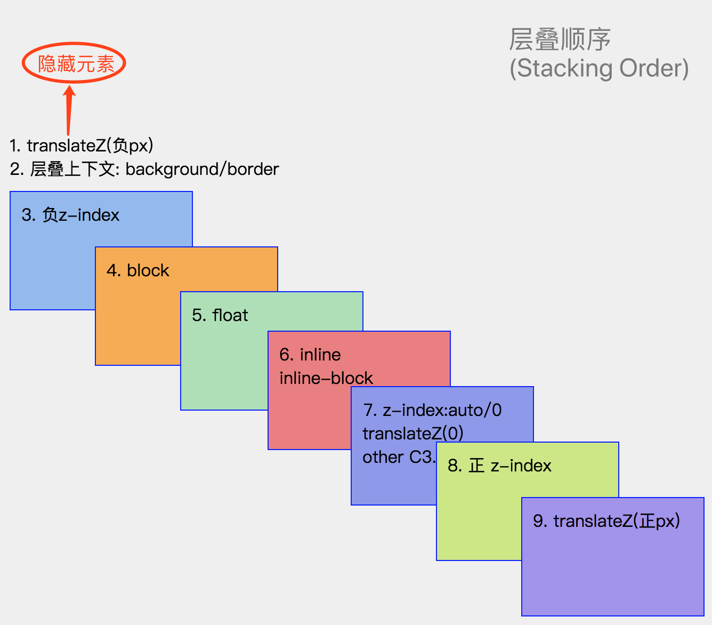

@织语长心 2018-11-09
你的 Stacking Context
知识点（7）
- 层叠界的术语
- 层叠准则
- 层叠上下文的特性
- 层叠上下文的创建 ✔️
- 层叠顺序 ✔️
- 控制层叠顺序
- 代码中的层叠应用
·层叠界的术语
一、层叠界的术语
- z轴：眼睛垂直于屏幕的一条虚拟的轴线
- 层叠上下文(Stacking Context)：表示元素在z轴上的层叠水平.(html 的三维概念)
- 层叠顺序(Stacking Order)：表示同一层叠上下文中的元素在z轴上的显示顺序
·层叠准则
二、层叠准则
前提条件：同一层叠上下文中：
- 谁大谁上：非同一层叠水平时，水平高的在上面
- 后来居上：同一层叠水平时，后出现的在上面
·层叠上下文的特性
三、层叠上下文的特性
- 层叠上下文的层叠水平要比普通元素高
- 层叠上下文可以嵌套：内部层叠上下文及其所有子元素均受制于外部的层叠上下文
- 每个层叠上下文和兄弟元素独立：当进行层叠变化或渲染的时候，只需考虑后代元素
- 每个层叠上下文自成体系：当元素发生层叠的时候，整个元素被认为在父层叠上下文的层叠顺序中
- 层叠上下文可以阻断元素的混合模式
·层叠上下文的创建
四、层叠上下文的创建
- 天生派(根元素)：页面的根元素
<html>天生具有层叠上下文 - 正统派(传统)：z-index为数值的定位元素（除 IE6、7 外）
- z-index: auto 在 IE6、7 上也会创建层叠上下文
- 扩招派(新秀)：CSS3 属性产生的层叠上下文
·层叠上下文的创建
正统派层叠上下文创建
- position: relative/absolute定位：
- z-index: !auto 创建
- position: fixed定位：
- z-index: !auto 创建「非 chrome 等 Webkit 内核浏览器」DEMO:(oldCreate1)
- 直接创建「chrome 等 Webkit 内核浏览器」DEMO:(oldCreate2)
- 以上两种情况导致其内部创建的层叠上下文总受外层影响！！!
- position: sticky定位时 ？？？
·层叠上下文的创建
扩招派层叠上下文创建
1. display:flex|inline-flex 弹性布局：z-index != auto 创建
2. 元素的 opacity: !1
3. 元素的 transform: !none
4. 元素的 filter: !none
5. 元素的 mix-blend-mode: !normal // 元素和白色背景混合，IE 不支持
6. 元素的 isolation: isolate // 阻隔混合模式
7. 元素的 will-change 属性值为 transform... // 增强页面渲染性能
8. 元素的 -webkit-overflow-scrolling: touch
·层叠顺序
五、层叠顺序（Stacking Order）
一旦普通元素具有了层叠上下文，其层叠顺序就会变高，具体定位具体分析：
 DEMO:(StackingOrder)
·层叠顺序
思考

- 为什么内联元素的层叠顺序比浮动元素和块状元素高
- 为什么定位元素会在普通元素之上展示
·改变层叠顺序
六、改变层叠顺序
- 不产生层叠上下文的前提下：
- 调整DOM结构（后来居上准则）
- 添加非z-index相关的属性（block、float、inline、inline-block、定位...）
- 产生层叠上下文的前提下：
- z-index问鼎天下
- translateZ逐鹿中原
- z-index与translateZ冲突：双剑合璧？？？
·改变层叠顺序
七、代码中的应用
- z-index 负值深入
- z-index 负值渲染的过程：实际是一个寻找第一个层叠上下文元素的过程（永远逃不脱的结界）
- （1）实现可访问性隐藏DEMO:(StackingOrder)
- （2）实现定位在元素的后面DEMO:(MinusZindex)
- 非浮动元素：z-index “不犯2”准则
- 浮层元素：z-index “层级计数器”
- 获取 z-index 最大值 / z-index 默认值（习惯设置为9）
参考文献
- 深入理解CSS中的层叠上下文和层叠顺序
- 张鑫旭新出的书：《CSS 世界》